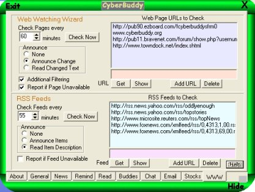
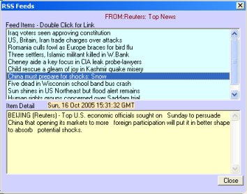

CyberBuddy museum copy · Original site by John M. DeFino · Arthur Tube unofficial continuation. Historical downloads and services may be unavailable. Continuation
RSS stands for Really Simple Syndication. Many Internet Information sites and most Web Blogs provide RSS feeds. These feeds allow quick and timely distribution of news and updated information. CyberBuddy can check these news feeds for you and tell you when they have changed.
The RSS News feed selections are on the WWW tab of CyberBuddy.

Announce
Here you select what CyberBuddy should tell you about the news feed:
None - RSS news feed checking is off
Announce Items - CyberBuddy will tell you when a feed has changed. It will annouce only the item title of the feed.
Announce Item Descriptions- CyberBuddy will tell you when a news feed has changed and will read the complete item description.
Check Pages Every...
Tells CyberBuddy how often to check the feeds while you are online
Report if Feed Unavailable
When this option is checked, CyberBuddy will tell you if, when it checks the feeds, a particular feed could not be accessed. This can be a great way to alert you when a server goes down or a feed has changed address.
Check Now
Tells CyberBuddy to check the feeds now. The first time a feed is checked, CyberBuddy just makes an internal copy of the feed, to be checked against later for changes.
News Feeds to check
This is the list of news feed URLs you would like CyberBuddy to keep track of. To add a feed:
Type the Web Address (URL) of the news feed in the box at the bottom of the list. Click the Add URL button to add the URL to the list. To delete a news feed from the list:
Click on the URL in the list to highlight it, then click the Delete button.
Use the Get button to test the URL or get the particular news feed now.
The Show Button will bring up a window that will show the items of the news feed you have selected. In the top portion of that window you will see a list of the current items in the selected news feed. If you click on an item, the complete description for the item will appear at the bottom portion of the window. If you double-click an item, your browser will open to the link supplied by the news feed item.
The Show Button will bring up a window that will show the items of the news feed you have selected.

Pause Reading / Stop Reading
To pause reading, click the Character once. He will finish reading the current line, then pause. If you leave him paused, he will remind you every minute or so that he is still paused. To resume reading, Click on the character once.
To stop reading, double-click on the character.
For more on RSS Readers and a link to a Web Page RSS news reader try www.readxml.com